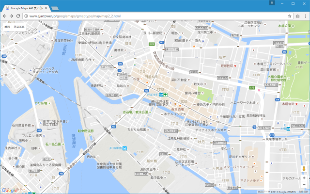

4つの基本マップタイプとマップタイプコントロールの使い方
Google Maps APIでは地図のタイプとして4つのマップタイプが用意されています。マップタイプは地図上に表示されたマップタイプコントロールを使って切り替えることができます。ここでは4つの基本的なマップタイプの紹介と、地図上でマップタイプコントロールを使ってマップタイプを切り替える方法について解説します。
1.4つの基本マップタイプ
2.マップタイプコントロールとは
4つの基本マップタイプ
Google Maps APIで使用できる基本のマップタイプは4つ用意されています。
ROADMAP 道路や建物などが表示される地図です SATELLITE 衛星写真を使った地図です HYBRID ROADMAPとSATELLITEの複合した地図です TERRAIN 地形情報を使った地図です
他にも基本のマップにスタイルを適用したり、独自のマップタイルを用意してカスタムマップタイプを定義することもできます。これらは別のカテゴリで解説します。
実際にどのように表示されるのかを確認してみます。下記では3つの場所でマップタイプを適用した時に地図がどのように表示されるのかを表しています。
ROADMAP
ROADMAPは道路や建物などの情報が二次元で表示された基本的な地図です。道路や建物などの名称もラベルとして表示されています。
SATELLITE
SATELLITEはGoogle Earthで使用されている衛星写真を使った地図です。
HYBRID
HYBRIDはSATELLITEの衛星写真を使った地図にROADMAPで使われていた道路や建物のラベルを追加した地図です。
TERRAIN
TERRAINはROADMAPをベースに地形が分かるように加工がされた地図です。

地図を作成する時は4つの基本マップタイプのいずれかを選択して表示します。指定しなかった場合にはROADMAPが使用されます。
マップタイプコントロールとは
マップタイプはスクリプトの中で指定することができますが、マップタイプコントロールを表示するようにしている場合には利用者の人がマップタイプを切り替えることができます。マップタイプコントロールはデフォルトで地図の画面左上に表示されています。
「地図」と「航空写真」の2つが表示されています。「地図」がROADMAP、「航空写真」がSATELLITEに対応しています。それではマップタイプコントロールの「航空写真」をクリックして下さい。
地図のマップタイプがSATELLITEに設定されて表示されました。
同じようにマップタイプコントロールの「地図」をクリックするとマップタイプがROADMAPに設定されて地図が表示されます。
-- --
マップタイプをHYBRIDに設定したい場合には、「航空写真」をクリックした後で下に表示される「ラベル」にチェックを入れて下さい。
地図のマップタイプがHYBRIDに設定されて表示されました。
-- --
マップタイプをTERRAINに設定したい場合には、「地図」をクリックした後で下に表示される「地形」にチェックを入れて下さい。
地図のマップタイプがTERRAINに設定されて表示されました。
なおデフォルトでは「地形」のチェックボックスが表示されない場合があります。その場合はマップタイプコントロールでTERRAINが選択できるようにする設定が別途必要となります(別のページで解説します)どのマップタイプを選択できるのかを設定して下さい。
( Written by Tatsuo Ikura )

著者 / TATSUO IKURA
初心者～中級者の方を対象としたプログラミング方法や開発環境の構築の解説を行うサイトの運営を行っています。